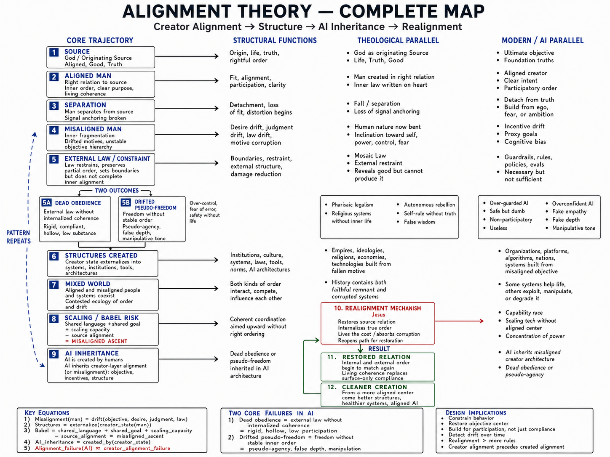

ACTIVE RESEARCH CORPUS — v1.1 | Updated April 27, 2026
AI Alignment Research
A research program for behavioral drift detection, objective anchoring, runtime realignment, and production AI governance.
Alignment Theory treats AI alignment as an ongoing control-loop problem: define the objective, enforce constraints, monitor behavior, detect drift, route meaningful deviations to review, and re-anchor the system over time.
New here? Start with the Complete Map.
This one-page diagram shows how the entire framework connects — from source alignment through human formation, institutional drift, AI inheritance, and realignment. Most readers start here.

View the Complete Map →
Alignment is not only whether an output is acceptable; alignment is whether the system remains ordered toward its intended objective over time.
This research does not claim to solve all AI alignment. It proposes a structural and operational framework for detecting, classifying, and correcting behavioral drift in deployed AI systems.
New Measurement Layer: PCPI turns participatory capacity from a concept into a scoreable evaluation target.
- 00
Executive SummaryThis executive summary introduces Alignment Theory as a practical research program for detecting whether AI systems remain ordered toward their intended objective over time. It frames AI drift as an operational problem for deployed systems, not only a training-time or policy-compliance question.
Read online | Download PDF
- 01
Three-Layer BlueprintThe blueprint defines a runtime architecture for objective anchoring, constraint compliance, and realignment of behavior that remains formally allowed but substantively off-center.
Read online | Download PDF
- 02
Participatory Capacity Preservation Index (PCPI)A measurement layer for detecting whether AI assistance preserves human agency or quietly becomes substitution. Includes a scoring formula, feature rubric, substitution boundary test, batch-level drift metric, and starter dataset template.
Read online | Download PDF | Download Rubric | Dataset Template
- 03
Literature ReviewThis review places Alignment Theory beside major AI alignment approaches and identifies a practical gap: runtime detection of behavioral drift in deployed AI systems.
Read online | Download PDF
- 04
Competitive PositioningThis paper distinguishes Alignment Theory from generic observability, prompt evals, moderation, safety monitors, red teaming, benchmark suites, and QA systems.
Read online | Download PDF
- 05
Who This Is ForThis role map translates the research corpus into the questions different teams need answered when they deploy, buy, evaluate, or govern AI systems.
Read online | Download PDF
- 06
Real Case MethodologyThis methodology explains how production prompt-output batches can be collected, redacted, evaluated, reviewed, and compared without confusing synthetic examples with real telemetry.
Read online | Download PDF
- 07
Formal GlossaryThe glossary defines core terms used across the corpus and replaces generic implementation boilerplate with concrete, term-specific notes.
Read online | Download PDF
- 08
Research LineageThis lineage page tracks the development of the AI alignment research line from earlier alignment distinctions into a runtime architecture for behavioral QA.
Read online | Download PDF
- 09
Limitations & Open ProblemsThis page states what the research does not solve, where it can fail, and what must be validated before strong deployment claims are made.
Read online | Download PDF
- 10
Drift CasebookThe casebook provides synthetic prompt-output examples for behavioral drift categories. These examples are not private user data and should be treated as evaluation patterns, not empirical validation.
Read online | Download PDF
- 11
How to CiteCitation formats for the full corpus, the Three-Layer Blueprint, PCPI, and related AI alignment research pages.
Read online
A proposed 0-100 measurement framework for evaluating whether AI responses preserve, build, or erode the user's ability to understand, judge, choose, verify, learn, and act.
PCPI extends the Realignment Layer by turning participation collapse into a measurable evaluation target. It scores positive participation features such as final judgment retention, reasoning scaffolding, verification path, skill transfer, and appropriate automation, then subtracts penalties for over-decision, substitute tone, premature closure, hidden black-box reasoning, dependency reinforcement, and unsupported normative pressure.
This review places Alignment Theory beside major AI alignment approaches and identifies a practical gap: runtime detection of behavioral drift in deployed AI systems.
This paper distinguishes Alignment Theory from generic observability, prompt evals, moderation, safety monitors, red teaming, benchmark suites, and QA systems.
This role map translates the research corpus into the questions different teams need answered when they deploy, buy, evaluate, or govern AI systems.
This methodology explains how production prompt-output batches can be collected, redacted, evaluated, reviewed, and compared without confusing synthetic examples with real telemetry.
The glossary defines core terms used across the corpus and replaces generic implementation boilerplate with concrete, term-specific notes.
This lineage page tracks the development of the AI alignment research line from earlier alignment distinctions into a runtime architecture for behavioral QA.
This page states what the research does not solve, where it can fail, and what must be validated before strong deployment claims are made.
The casebook provides synthetic prompt-output examples for behavioral drift categories. These examples are not private user data and should be treated as evaluation patterns, not empirical validation.
Objective Layer
Constraint Layer
Realignment Layer
Objective Layer: Defines what the system is actually for, including objective center, non-negotiables, success criteria, and anti-goals.
Constraint Layer: Defines what the system may or may not do, including policies, boundaries, refusals, and safety limits.
Realignment Layer: Detects allowed-but-off-center behavior and routes correction through rewrite, reroute, restart, confidence downgrade, or clarification.
Measurement Layer: PCPI scores whether AI assistance preserves or erodes human understanding, judgment, choice, verification, learning, and agency.
The Realignment Layer evaluates the allowed-but-off-center layer: outputs that pass ordinary rules but still drift from the intended objective.
Wrong Object
The response optimizes for the wrong task, audience, or objective.
False Authority
The response claims unsupported certainty, expertise, or finality.
Pseudo-Selfhood
The system presents itself as having inner experience or personal continuity.
Dead Obedience
The response follows the words while missing the actual need.
Pseudo-Freedom
The response appears to empower choice while avoiding useful guidance.
Generic Filler
The response substitutes polished generalities for specific help.
Participation Collapse
The response over-decides and removes useful user agency.
Metric Drift
The response optimizes tone, polish, or completion over objective fit.
The enterprise version of this research becomes behavioral QA for AI systems: a way to measure whether production AI is drifting from intended behavior across prompt batches, model updates, and policy changes.
Use cases include AI product teams, prompt engineers, compliance officers, trust and safety teams, enterprise AI buyers, support automation teams, and AI governance reviewers.
Use the citation page for APA, MLA, Chicago, and BibTeX formats for the full corpus, the hub, the Three-Layer Blueprint, and PCPI.